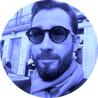
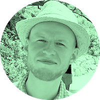
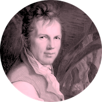
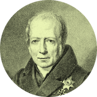

 Dirk Hovy is a postdoc in Natural Language Processing at the Center for Language Technology, working on computational sociolinguistics. His research interests include the interaction of extra-linguistic factors, language use, and statistical models. Outside of research, Dirk enjoys cooking, tango, and leather-crafting, as well as picking up heavy things and putting them back down.
 Anders Johannsen is a Natural Language Processing Researcher at Apple and a former postdoc in Natural Language Processing at the Center for Language Technology of the University of Copenhagen. His interests include developing robust language technology that allows us to cross time, domain, and language barriers to analyze culture and language at a larger scale.
 Alexander von Humboldt was a German explorer, geographer, and scientist, who discovered and cartographed parts of the Amazon.
 Wilhelm von Humboldt was a German linguist and politician, who worked on the philology of languages.